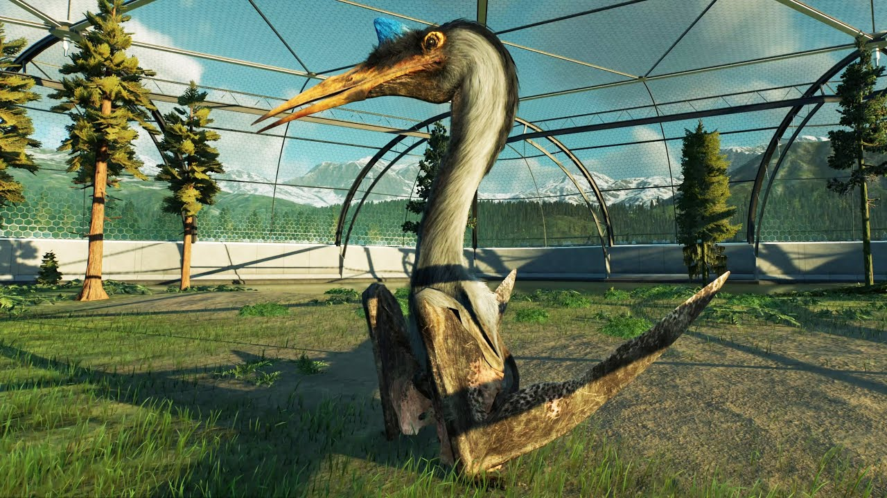
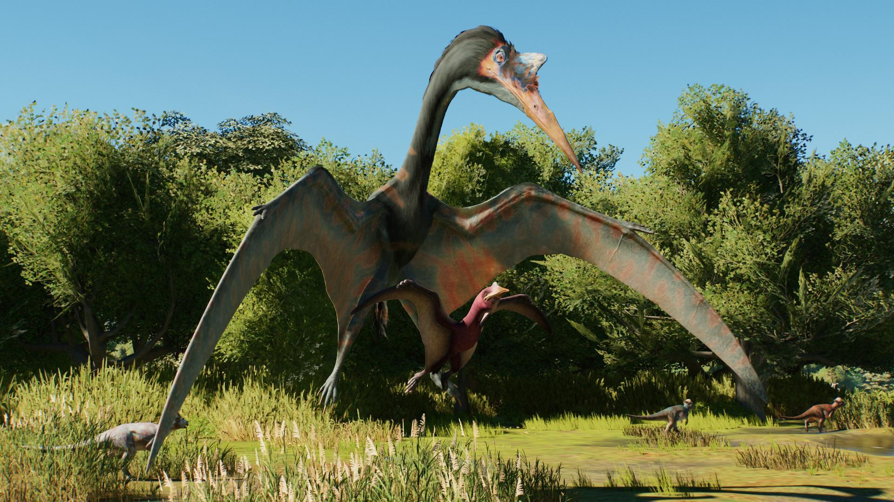
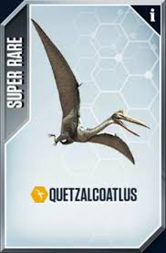
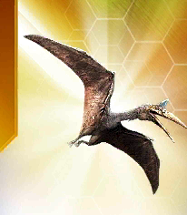
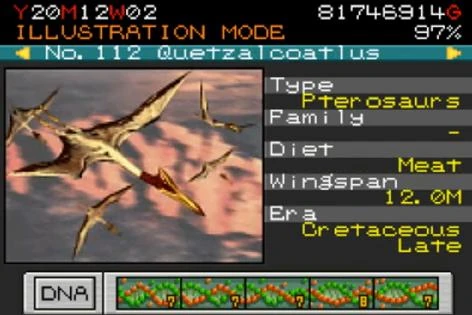

Quetzalcoatlus foi adicionado ao jogo em 14 de junho de 2022, com sua aparência baseada na sua aparição em Jurassic World: Domínio.

Ele também aparece em Jurassic World Evolution 3, agora com a presença de filhotes.

Sons do Quetzalcoatlus dentro do jogo:
O Quetzalcoatlus aparece em Jurassic World: O Jogo como um dinossauro não híbrido super raro. Em 29 de junho de 2024, uma geração 2 baseada em sua aparição no Jurassic World: Domínio foi adicionada como um pterossauro exclusivo VIP.


| Espécie: | Classe: | Custo em DNA: | Raridade: |
| Quetzalcoatlus Gen 1 | Pterossauro | 1.350 DNA | Super raro |
| Quetzalcoatlus Gen 2 | Pterossauro | 10.000 DNA | VIP |
Neste jogo, Quetzalcoatlus possui 4 estágios de evolução:
| Estágio: | Recompensa: | Fatos: |
| EVO 1 | 1,460 Alimentos | "Os fósseis de Quetzalcoatlus foram descobertos em 1971, no estado do Texas, onde durante o Período Cretáceo Superior eles viveram." |
| EVO 2 | 9,520 Alimentos | "Você sabia que este pterossauro do tamanho de um avião é um dos maiores animais voadores de todos os tempos?!" |
| EVO 3 | 54 Dólares e 43,620 Alimentos | "Com uma envergadura de cerca de 40 pés, o Quetzalcoatlus é do tamanho de um jato de combate MIG-29!" |
| EVO 4 | 100 Dólares, 184,300 Alimentos e 128 DNA | "Este gigante sem penas recebe o nome de Quetzalcoatl, um deus da serpente voadora mesoamericana!" |
Quetzalcoatlus é um dos 140 espécies disponíveis no jogo. Quetzalcoatlus é o número 112 dos Carnívoros que podem ser criados no jogo Jurassic Park III: Park Builder.
